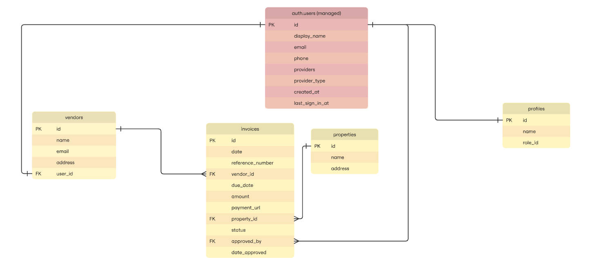

Dallas Software Developers · CYC Fall 2026
Works on My Machine
Team 5 · Utility invoice processing
Manual utility invoice processing
Re-entering invoice details
Accounts-payable staff read vendor PDFs and enter the same details into a separate system.
Checking before payment
Staff verify the bill against the record, resolve discrepancies and get approval before it can be paid.
Our app pulls key fields from the PDF and gives reviewers the original bill alongside the extracted details.
Product walkthrough
- UploadOpen a fictional utility bill.
- ExtractPopulate vendor, invoice number, total and due date.
- ReviewCompare with the PDF, correct a field and save.
- ApproveShow the approval decision and payment eligibility.
- ConfirmShow the recorded result of a mock payment.
Probabilistic and deterministic steps
Probabilistic
In the mock payment agent prototype, a model proposes what to do next based on what it sees in the vendor portal.
Deterministic
PDF parsing and approval rules follow code. The payment workflow checks eligibility and validates proposed actions before execution.
A person confirms the mock payment.
Quick tech stack
- Application
- Next.js, React and TypeScript with CoreUI and Sass.
- PDF extraction
- pdf-parse reads the PDF text. A parser maps it to invoice fields.
- Data and access
- Supabase provides Postgres, authentication and document storage.
- Mock payment agent
- OpenRouter provides model access. Playwright runs browser actions in the fictional vendor portal.
AI workflow for mock payments
- ObserveRead the fictional portal page.
- ProposeThe model suggests the next browser action.
- ValidateCode checks the action against the allowed operations.
- ExecutePlaywright carries out the accepted action and returns the new page state.
- ConfirmThe user reviews the prepared payment before submission.
How Team 5 worked
- Miro
- Shared planning and visual collaboration.
- Jira
- Tracked work as DC issues and assigned tasks.
- GitHub
- Collaborated on code through branches and pull requests.
- Discord
- Coordinated team conversations and handoffs.
Supabase and the invoice data model
Supabase
Postgres stores invoices, vendors and properties. Authentication and profiles identify the people using the app.
